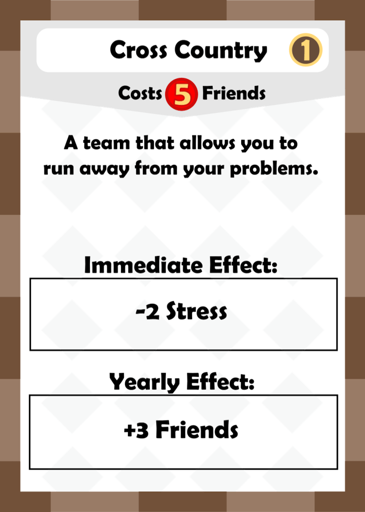
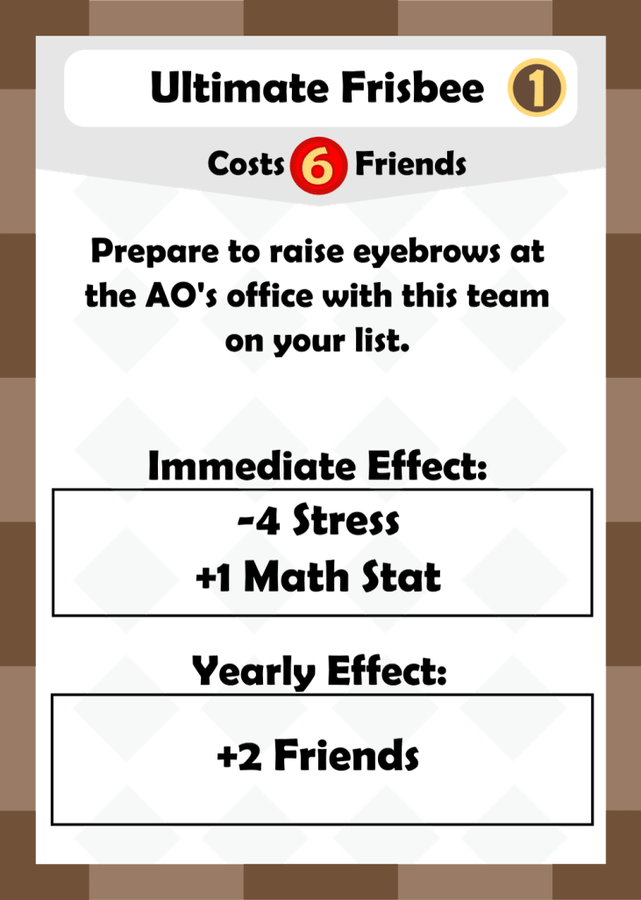
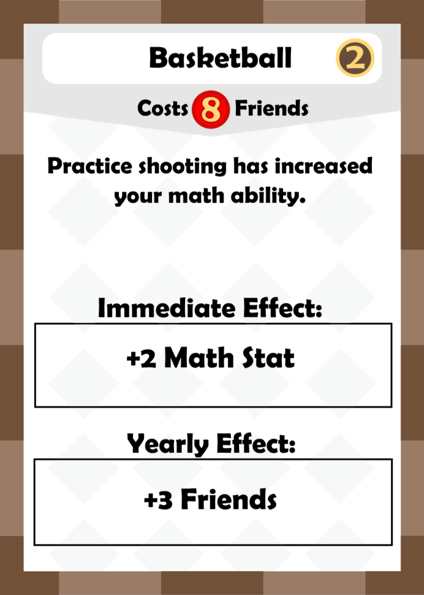

Hey everyone! Today I will be talking about sports, a series of themed clubs that have recently went under a large revision. Clubs have always been dangerous since there isn’t a limit to how many you can buy in one turn. Sports specifically created a lot of abuse as they were high in RP value, and gave friends for purchasing them. A large part of this is thematic: stereotypically speaking, sports are a good way to meet friends and also look good on the resume. I wanted to keep these thematic elements without making it too easy to accumulate a lot of sports in one turn.
In order to do this, the sports have now shifted in focus. Now, clubs are engines rather than large sources of RP: they give you Friends at the end of the year, but they are usually worth less RP than clubs that are more academic. In addition, immediate effects that gave back Friends were completely removed. As one of my play testers pointed out, immediate effects that gave Friends were basically just discounts on the club cost. This made sports extremely cheap to obtain relative to other clubs, and led to monster turns where a player could buy 2-3 clubs in one turn. Instead of being disposable clubs that can be snapped up extremely easily, sports are now more focused on paying themselves back in the long run.
As a side note, an earlier edition of the game made sports cost Athletic Stat. Ultimately though, it was removed because it didn’t fit in well with the other Stats.

The first sport of the series, and also the lowest cost one. This card used to be worth 2 RP and have an immediate effect of +1 Friend. It also has a very strong yearly effect of +3 Friends, meaning that it pays for itself in 2 years. I like this design as it is a good reflection of what the sports really do: which is to generate Friends over time.
Ultimate Frisbee has a much stronger immediate effect than Cross Country, but also has a weaker yearly ability. I think it’s good to have diversity like this since clubs like Cross Country get weaker later in the game, while clubs like Ultimate Frisbee get stronger. Fun fact, I played Ultimate Frisbee in high school and a large part of my team was also a part of the math team.

Soccer used to be 3 RP and give +3 Friends for the immediate effect. While that sounds reasonable, it really only cost 4 Friends due to the immediate ability. This made Soccer vastly more cost efficient than basically any other club in the game, and it had to be changed. It is still a very solid club, but much less of an immediate purchase.
A lot of people were confused as to why Basketball gives you Math Stat, but it’s actually a little bit more than for the flavor text joke. I wanted all of the sports to have unique elements to differentiate them from each-other, and so I thought it would be cool to have a sport that gave Stats. This club can lead to some interesting interactions while still fitting into the overall sports theme of giving Friends at the end of every year.
This was a very difficult club to get right. It initially had an Immediate effect that made a player lose Stats, but it was pretty clunky and confusing for newer players. It then became a +4 Friend immediate effect, which led to Football being extremely cheap, like the old Soccer. Finally, I settled on this version, which takes away a stat at the end of every year (which isn’t actually that bad at all since you can plan around it) but grants 5 Friends. The immediate effect giving Teacher Influence felt pretty appropriate thematically as well. It also is the most expensive sport in the series, but also is worth the most RP and gives the most Friends each year.
In terms of changes, I played around with the Friend costs and settled on a 5-6-7-8-9 progression. Initially I wasn’t paying too much attention to this, but I think it makes the sports feel more like a group. I think that this is a good example of how theme and mechanics can be very related: in this case, I’m using mechanics to enhance the theme.
What did you think of the changes to these sports? Let me know by leaving a comment below! Thanks for reading, and make sure to subscribe if you enjoy this content!